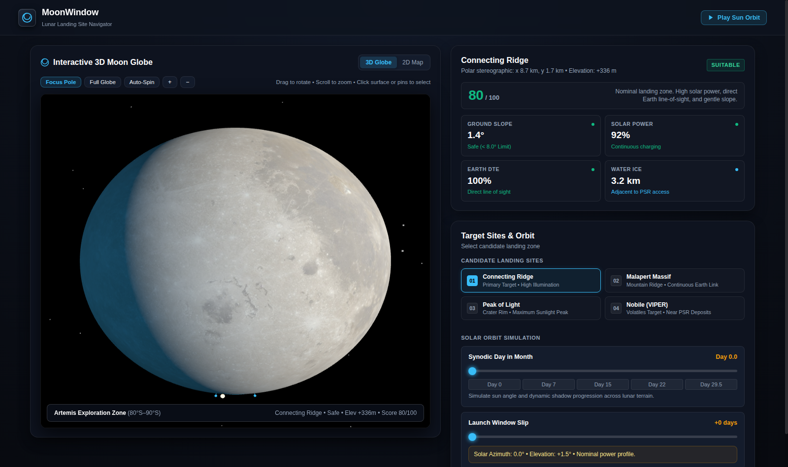
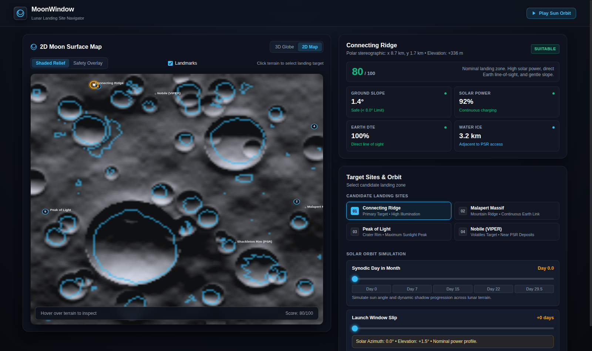
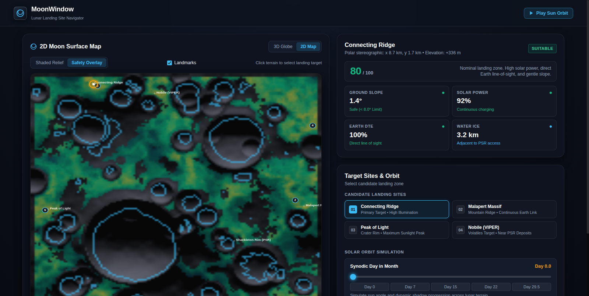

Rapid, Date-Resilient Horizon & Landing Feasibility Decision Support for Artemis and Commercial Landers
At the Lunar South Pole (80°S–90°S), landing feasibility is strictly governed by extreme grazing solar angles, 40-kilometer crater shadows, and Earth libration oscillations.
MoonWindow is an intuitive, aerospace-grade web platform that bridges high-precision NASA ephemeris and LOLA terrain topography with rapid dual-axis trade screening: evaluate "Change only the date" vs "Change only the site" in milliseconds.

Why traditional planning tools leave mission architects vulnerable to unexpected launch schedule shifts
The Moon has negligible axial tilt. The Sun never climbs high into the polar sky—it skims the horizon at 0.5° to 1.5°, casting shadows over 40 km long.
Earth is not stationary in the lunar sky. Orbital libration causes Earth to oscillate above and below the jagged crater rim silhouette, triggering sudden DTE communication blackouts.
In practice, hardware delays scrub launch dates. At the pole, slipping launch by just 3 days rotates the landing phase, plunging a previously sunlit ridge into a fatal 70-hour freeze.
NASA Quickmap, Moon Trek, and SPICE toolkits provide raw data but lack instant scenario comparison. Teams must navigate disconnected interfaces and write custom scripts for each delay.
Translating complex orbital mechanics and topographic ray-casting into instantaneous flight verdicts
Scrub the Launch Slip Contingency (+0 to +14 days) or synodic lunar day (0 to 29.5d). Reveals whether solar arrays survive launch delays without re-running simulations.
Toggle between Site A vs Site B across candidate zones (Connecting Ridge vs Malapert Massif). Compares crater rim obstruction geometry and communication windows side-by-side.
Ray-casts in 72 azimuth bins (5° angular resolution) across the 150×150 elevation matrix from landing coordinates $(x_0, y_0)$, computing the exact obstacle horizon angle:

Engineers and educators get instant plain-text translation: "Nominal landing zone. High solar power, direct Earth line-of-sight, and gentle slope." Eliminates ambiguity in fast-paced flight planning.
Connecting touchdown safety with in-situ resource extraction targets in Permanently Shadowed Regions
The prime scientific objective of Artemis and VIPER is locating ancient water-ice deposits inside cryogenic cold traps (temperatures below 40 K) within Permanently Shadowed Regions (PSRs).

Dynamic terrain profile graph renders cumulative ascent, descent, maximum step grade, and highlights sunlit vs shadowed drive segments along the rover route.
Ensuring scientific integrity, clear operational boundaries, and accessible public engagement
A fundamental requirement for NASA flight certification is acknowledging the physical limits of orbital data: